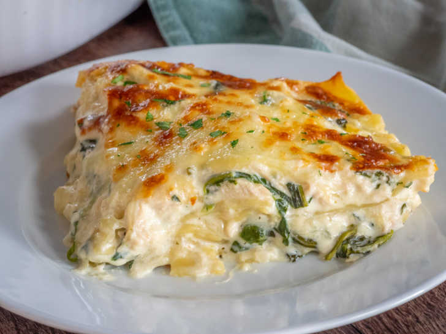

Chicken and spinach Alfredo Lasagna

INGREDIENTS
- 1 (8 ounce) package lasagna noodles
- 3 cups heavy cream
- 2 (10.5 ounce) cans condensed cream of mushroom soup
- 1 cup grated Parmesan cheese
- ¼ cup butter
- 1 tablespoon olive oil
step 1
- Gather the ingredients
step 2
- Preheat the oven to 350 degrees F (175 degrees C). Bring a large pot of lightly salted water to a boil. Add lasagna noodles and cook until al dente, about 8 to 10 minutes. Drain, and rinse with cold water.
step 3
- Mix heavy cream, cream of mushroom soup, Parmesan cheese, and butter in a saucepan over low heat; simmer, stirring frequently, until well blended.
Go back